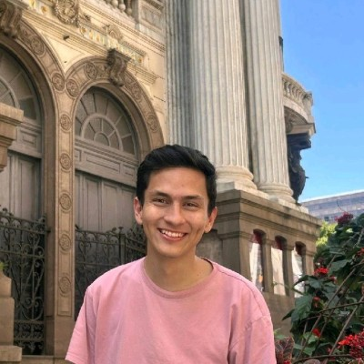
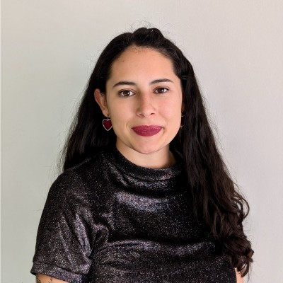
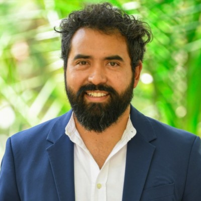
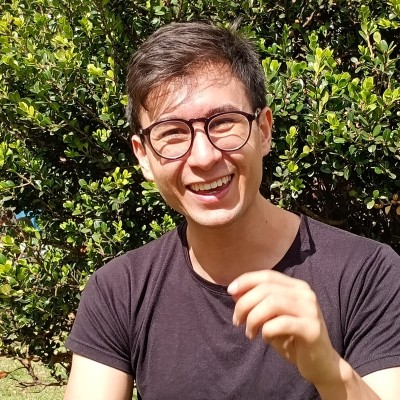
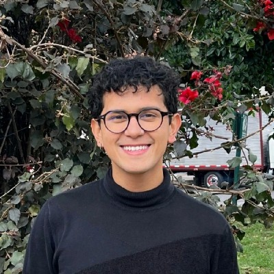
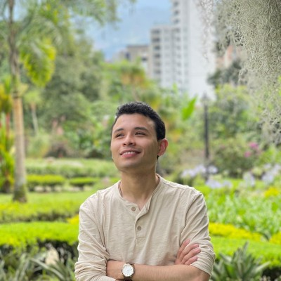
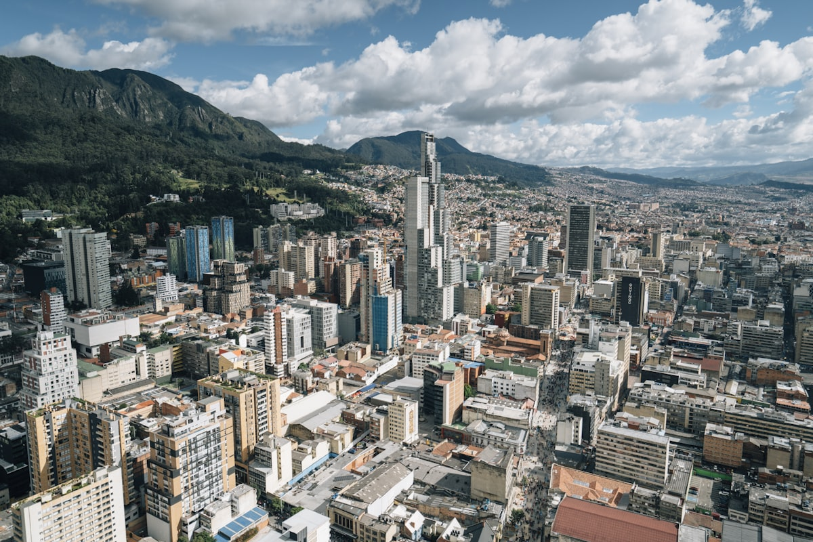

Profesionales comprometidos con usar evidencia y razón para hacer el mayor bien posible. Professionals committed to using evidence and reason to do the most good possible.

Estudió ciencia política en Uniandes y le obsesiona entender cómo la IA cambia la política pública. Cofundador de AI Safety Colombia. Coordina la estrategia, los eventos y las alianzas de Altruismo Eficaz Bogotá. Studied political science at Uniandes and is obsessed with how AI reshapes public policy. Co-founder of AI Safety Colombia. Coordinates Effective Altruism Bogotá's strategy, events, and partnerships.

Cofundó ACTRA, una organización que usa terapia cognitivo-conductual para prevenir el crimen en Latinoamérica, nacida del programa de Charity Entrepreneurship. Egresada de la Universidad de Minerva con experiencia en monitoreo y evaluación. Co-founded ACTRA, an organization using cognitive behavioral therapy to prevent crime in Latin America, born out of Charity Entrepreneurship. Minerva University graduate with expertise in monitoring and evaluation.

Dirige la oficina de IPA en Colombia, donde convierte evidencia rigurosa en mejores decisiones de política pública. Pasó por Uniandes y la Universidad de Columbia, y lleva años en el mundo de evaluación de impacto. Runs IPA's Colombia office, turning rigorous evidence into better policy decisions. Went through Uniandes and Columbia University, and has spent years in the impact evaluation world.

Economista de Uniandes que terminó metido de lleno en inteligencia artificial. Cofundó Cliver, enseñó bootcamps de seguridad de IA en Latinoamérica y ayudó a redactar el Código de Prácticas del EU AI Act. Economist from Uniandes who ended up deep in artificial intelligence. Co-founded Cliver, taught AI safety bootcamps across Latin America, and helped draft the EU AI Act Code of Practice.

Politólogo de Uniandes. Trabaja como analista de investigación en IPA y cursa el MicroMasters en datos, economía y diseño de políticas de MITx. También colabora como voluntario de investigación en ACTRA. Political scientist from Uniandes. Works as a research analyst at IPA and is pursuing the MITx MicroMasters in Data, Economics, and Design of Policy. Also volunteers as a researcher at ACTRA.
Estudia lingüística y ciencias políticas en la Universidad Nacional. Copresidenta de AE Uniandes y directora de relaciones en Plataforma ALTO. Expresidenta del Consejo Distrital de Juventud de Bogotá. Studies linguistics and political science at Universidad Nacional. Co-president of AE Uniandes and director of relations at Plataforma ALTO. Former president of Bogotá's District Youth Council.
Estudia antropología y ciencia política en Uniandes. Copresidente de AE Uniandes. Lidera incidencia en América Solidaria Colombia y fue voluntario en la Comisión de la Verdad. Studies anthropology and political science at Uniandes. Co-president of AE Uniandes. Leads advocacy at América Solidaria Colombia and volunteered at Colombia's Truth Commission.

Estudia ciencia política y narrativas digitales en Uniandes. Investiga en el semillero de ciencia política y le interesa cómo contar historias que muevan a la acción. Studies political science and digital narratives at Uniandes. Researches in the political science seedbed and is interested in how storytelling drives action.
Siempre buscamos personas motivadas para ayudar a organizar eventos, crear contenido, desarrollar alianzas o contribuir con sus habilidades profesionales. We're always looking for motivated people to help organize events, create content, develop partnerships, or contribute their professional skills.
Ser voluntario Volunteer